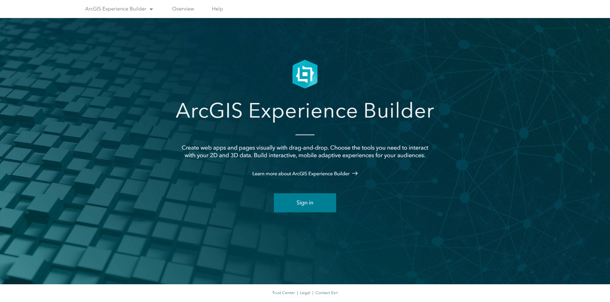
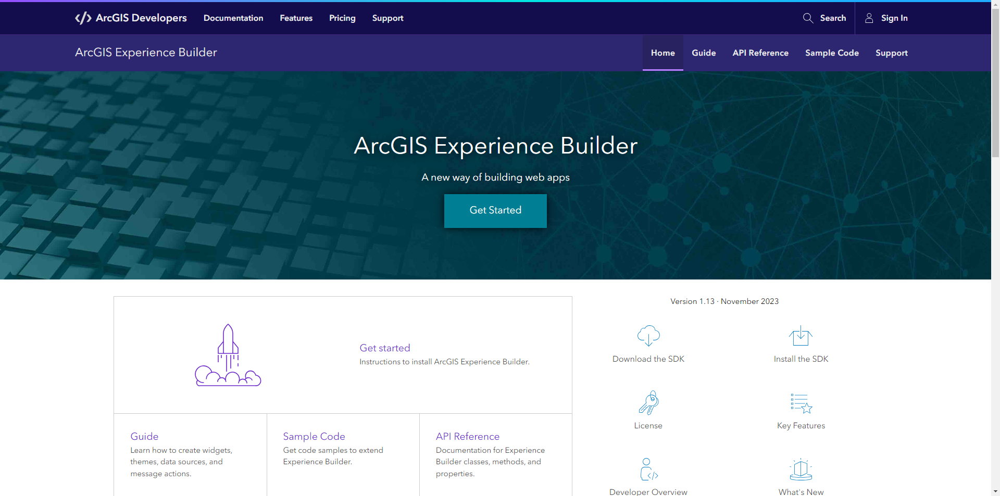

ArcGIS Experience Builder: Building Your First Widget
Shawn Goulet (Esri PS | Atlantic Delivery Center)
Slides:
https://shawnmgoulet.github.io/2024-dev-summit-arcgis-exb-building-your-first-widget/slides/
Intro to Experience Builder
What is ArcGIS Experience Builder
|
ArcGIS Experience Builder empowers you to quickly transform your data into compelling web apps and pages
|

|
ArcGIS Experience Builder Editions
|
  |
Installation
Widget Location
Widget Structure
Sample Code
Connect With Us On Social
And Join the Conversation Using #DevSummit